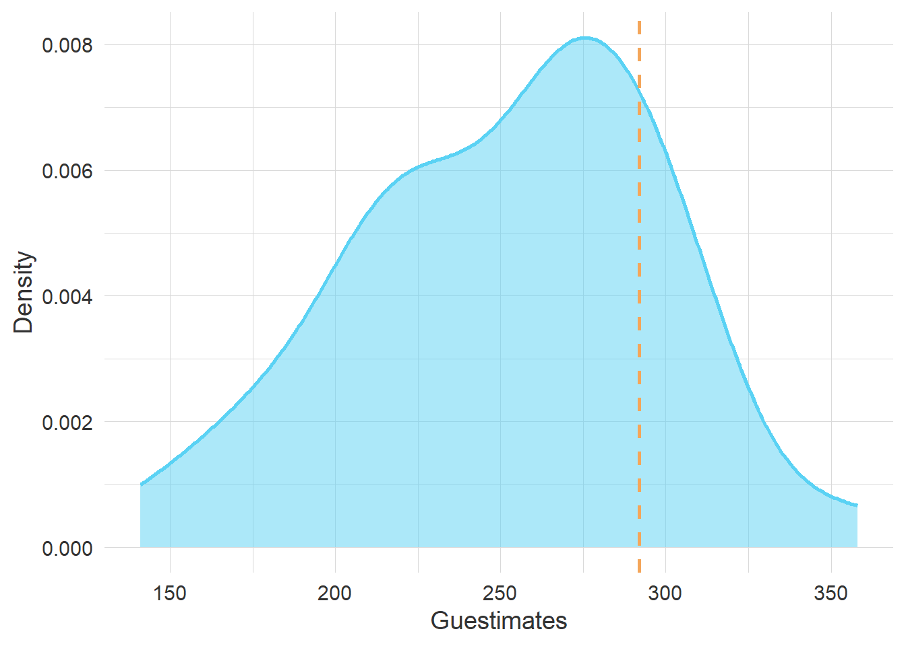

| Cumulative Goals — Predicted vs Actual | |||
| Participant | Predicted | Actual | Points |
|---|---|---|---|
| Jana Blahak | 292 | 292 | 30 |
| Christian Lehne | 295 | 292 | 27 |
| Daniel Goldstein | 288 | 292 | 26 |
| Gabriel Lönn | 301 | 292 | 22 |
| Åse Gornitzka | 282 | 292 | 21 |
| Kristoffer Kolltveit | 304 | 292 | 20 |
| Vilde Hernes | 304 | 292 | 20 |
| Maiken Røed | 278 | 292 | 19 |
| Håvard Strand | 306 | 292 | 19 |
| Marina Povitkina | 277 | 292 | 18 |
| Daniel Naurin | 276 | 292 | 17 |
| Martin Søyland | 312 | 292 | 15 |
| Elin Arntzen | 269 | 292 | 14 |
| Jan Erling Klausen | 268 | 292 | 13 |
| Bjørn Fjærli | 268 | 292 | 13 |
| Stine Hesstvedt | 268 | 292 | 13 |
| Scott Gates | 262 | 292 | 11 |
| Tone Vevatne | 263 | 292 | 11 |
| Dagfinn Hagen | 263 | 292 | 11 |
| Jonathan Kuyper | 243 | 292 | 6 |
| Tom Christensen | 240 | 292 | 5 |
| Jostein Askim | 238 | 292 | 5 |
| Miroslav Nemcok | 230 | 292 | 4 |
| Jacob Nyrup | 358 | 292 | 3 |
| Hallvard Hodne Sandven | 227 | 292 | 3 |
| Øivind Bratberg | 222 | 292 | 3 |
| Anna Helgøy | 210 | 292 | 2 |
| Javier Padilla | 213 | 292 | 2 |
| Karin Dokken | 217 | 292 | 2 |
| Phillip Lutscher | 207 | 292 | 2 |
| Øyvind Stiansen | 217 | 292 | 2 |
| Ida Weseth Bjøru | 178 | 292 | 1 |
| Linda Gulli | 178 | 292 | 1 |
| Øyvind Colbjørnsen | 202 | 292 | 1 |
| Jon Hovi | 168 | 292 | 0 |
| Jonas Schmid | 141 | 292 | 0 |
The final question is How many goals will there be in the world cup.
The answer is generated from the forms you all handed in at the start of the cup. Right now, we are at 292, with four games to go.
As it stands, Jana has hit the bull’s eye, and receives 30 points. But, and update to this year’s rules is that we award points based on the deviance between estimate and the result. So, as it stands, Chistian is set to receive 27 points based on his current estimate of 295 goals, and Daniel G will get 26 points from the estimate of 288 goals.
How are the points rewarded.
The formula is
\[\text{points} = \operatorname{round}\left(P_{\max} \cdot \exp\left(-\frac{|\text{estimate} - \text{fasit}|}{\lambda}\right)\right)\]
The negative difference between the estimate and the correct value is divided by \({\lambda}\), and placed inside the anti-logarithm formula this fraction will always return a number between 0 and 1. If the estimate is equal to the current fasit;
the difference between estimate and fasit will be 0,
and 0/\({\lambda}\) will be 0, and the
anti-logarithm of 0 is 1.
1 multiplied with 30 points, which is the maximum points awarded, is 30, and that is what Jana is currently set to get.
Christian’s estimate is 295 goals, and the difference between 295 and 292 is 3. And now we need to figure out \({\lambda}\).
\[\lambda = \frac{\text{fasit}}{10}\]
Some of you with fond memories of Ottar Hellevik’s methods books will see that this in fact looks a lot like one of the steps towards the \(\chi^2\) test statistic, but we are here to hand out points rather than to kill the null hypothesis “There is no real difference between our estimates and reality”.
Vilde and Kristoffer, who currently miss the mark by a difference of 12 goals gets 20 points by this system.
the difference between estimate and fasit is 12,
\({\lambda}\) is fasit, or 292, divided by 10, which is 29.2
and 12/29.2 will be 0.41, and the
anti-logarithm of -0.41 is 0.66.
0.66 multiplied with 30 is 19.89, or rounded off to 20.
Scott, with 30 goals difference, gets 11 points. Øivind, who has about 70 goals difference, gets three points. Finally, Øyvind C, previous winner of the competition, is 90 goals off the mark and receives a single point.

The plot above shows how our estimates are distributed. We largely believed this World Cup to be more frugal than it turned out to be, which is somewhat surprising given that a few of the expected trashings ended 0-0.